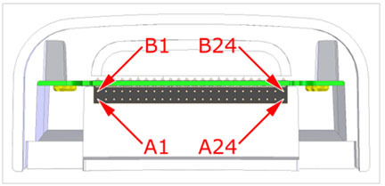

Operating Documentation
Direction 5670000, Rev# 1
Optima MR450w 1.5T Service Methods
Module Version 2.0, Version Date 3/3/08
Operating Documentation |
| Required Persons | Procedure |
| 1 | 30 min |
The following tips can be used to troubleshoot common problems with the 3T HD T/R Knee Array by Invivo, catalog M3335LB.
Digital Volt Meter
The following coil configuration names must be installed to run this tool:
GE_HDx TR Knee PA, GE_HDx TRK1chServ, GE_HDx TRKneeServ
Problem:
You are unable to pre-scan or are scanning and yet receiving no signal.
Possible Solution:
Verify that you have selected the appropriate system coil selection. Refer to the Operators Manual for additional information.
Verify the green light above Port A is illuminated. This indicates the coil is properly plugged into the system.
Verify that the landmark is correct and that the cradle has not unlatched.
Verify that the scan locations and any FOV offsets are correct.
Perform a continuity check on the external cable (below). The continuity check must be performed by a GE authorized Service Engineer.
Verify that the coil is positioned with the cable exiting towards the bore and that the system and coil polarity match.
If you still cannot get a signal, try to scan (transmit and receive) with the body coil. For this test, be sure to remove the imaging coil from the magnet bore before you scan with the body coil. If you still receive no signal the problem probably lies with your MR system. If the scan completes successfully, there is probably a problem with the Invivo coil. Contact GE for further assistance. If you are unable to scan with the substitute coil, there may be a system problem related to this particular coil type.
Problem:
Image quality is not what you expect it to be given the parameters selected.
Possible Solution:
·Review the selected protocol. If you are performing the Periodic Quality Assurance, be sure your protocol is identical to the protocol provided in your Systems Recommended Protocols. If you are performing diagnostic images, you may need to increase NEX or FOV.
Perform a continuity check on the external cable (below). The continuity check must be performed by a GE authorized Service Engineer.
Verify that there are no loops in the cables.
Verify that there are no metal or ferromagnetic objects close to the coil, patient or magnet (i.e., safety pin, hair pin).
Verify that the coil is properly positioned.
Verify that your center frequency is within the frequency adjustment range for your system.
Verify that the R1, R2 and TG values from the pre-scan are within normally expected ranges.
Cleaning the electrical contacts that connect the upper and lower halves with Isopropyl Alcohol and a cotton swab has been demonstrated to improve the coil’s SNR on occasion.
If you have not done so already, perform a MCQA (Multi Coil Assurance Test) Test. If the values you obtain do not fall within normal operating parameters, investigate this further by performing a phantom scan with the body coil. For this test, be sure to remove the imaging coil from the magnet bore before you scan with the body coil. If you still have the same problems, there is probably an MR system problem. If the body coil scan is satisfactory, acquire a scan using both another coil of the same type plugged into the same system port (port A).
If the image quality is visibly improved, there may be a problem with the Invivo coil. Contact GE for further assistance. If the image quality still suffers, there may be a system problem related to imaging with this type of coil.
Problem:
There is a black line or signal void on the image.
Possible Solution:
Verify that there is no metal present in the area being scanned in or on the patient.
Problem:
Some or all of the images appear shaded or exhibit uneven signal or banding.
Possible Solution:
Confirm that no metallic objects are located nearby, outside the FOV. This is especially important on images utilizing Fat Saturation.
If Fat Saturation is being used, verify that the CFA fine adjustment has been optimized.
Problem:
The system will not recognize the coil or scan with the coil attached.
Possible Solution:
Perform the cable continuity check. As follows:
RF Signal Channels Check
| NOTE: | The center pins of the System Connector receive coaxial
connectors are extremely fragile. Do not attempt to make any measurements
at these center pins. With the coil cable disconnected, use a multimeter to assure an open circuit condition exists between the designated pin and GND for each signal channel shown in Table 1. |
Table 1: Coil Cable Connector Short Circuit And Open Circuit Check
| Signal Channel | Coil Cable Connector | |
| MC-1 | A1 | GND |
| MC-2 | A15 | GND |
| MC-3 | A13 | GND |
| MC-4 | A11 | GND |
| MC-5 | A9 | GND |
| MC-6 | A7 | GND |
| MC-7 | A5 | GND |
| MC-8 | A23 | GND |
| Transmit Signal | A20 | GND |
| Reflected Power | A17 | GND |
| GND | NOTE: The following points are common to GND A4, A6, A8, A10, A12, A16, A18, A22, B1, B2, B3, B5, B6, B9, B11, B12, B13, B14, B15, B16, B18, B22 | |
Illustration 1: Coil Cable Connector

If one or more of the readings indicate a short, replace the cable. If all of the above readings indicate an open circuit condition, proceed to the PIN Diode Control Channels Check.
PIN Diode Control Channels Check
With the coil cable disconnected, use a multimeter to determine continuity between the designated pins for each control channel below. Also verify that the control pins are not shorted to GND.
Table 2: Coil Cable Connector Continuity Check
| Control Channel | Coil Cable Connector | System Connector |
| MC bias 1 | B24 | J1 |
| MC bias 2 | A24 | J2 |
| MC bias 3 | B23 | J3 |
| MC bias 4 | A23 | J4 |
| MC bias 5 | B6 | J5 |
| MC bias 6 | B8 | J6 |
| MC bias 7 | B10 | J7 |
| MC bias 8 | B4 | J8 |
| GND | NOTE: The following points are common to GND: A4, A6, A8, A10, A12, A16, A18, A22, B1, B2, B3, B5, B6, B9, B11, B12, B13, B14, B15, B16, B18, B22 | K1-K8, M6, MC Shield |
Illustration 2: System Connector

If one or more of the readings are > 3 ohms, replace the coil cable. If all readings are < 3 ohms, proceed to the PIN Diodes Check.
PIN Diodes Check
With the coil cable connected to the coil, use a multimeter to measure the diode drop across the coil connector pins as detailed below. Use the System Connector illustration above for pin identification while performing this procedure.
Table 3: Pin Diode Expected Readings
| System Connector | ||||
| Positive Lead | Negative Lead | Reading | ||
| J1 | GND | [MC Shield] | 2.4 ± 0.3 | |
| GND | [G1] | J1 | Open | |
| J2 | GND | [MC Shield] | 2.4 ± 0.3 | |
| GND | [G2] | J2 | Open | |
| J3 | GND | [MC Shield] | 1.1 ± 0.3 | |
| GND | [G3] | J3 | Open | |
| J4 | GND | [MC Shield] | 1.1 ± 0.3 | |
| GND | [G4] | J4 | Open | |
| J5 | GND | [MC Shield] | 1.1 ± 0.3 | |
| GND | [G5] | J5 | Open | |
| J6 | GND | [MC Shield] | 2.4 ± 0.3 | |
| GND | [G6] | J6 | Open | |
| J7 | GND | [MC Shield] | 2.3 ± 0.3 | |
| GND | [G7] | J7 | Open | |
| J8 | GND | [MC Shield] | 1.1 ± 0.3 | |
| GND | [G8] | J8 | Open | |
| F1 | F1 Shield | 1.6 ± 0.3 | ||
| F1 Shield | F1 | 1.6 ± 0.3 | ||
| H1 | H1 Shield | Open | ||
| H1 Shield | H1 | Open | ||
If one or more of the readings indicate a short, replace the coil. If all of the above readings are correct, redo Coil Imaging Performance Verification. If the problem still exists, replace the 3T HD T/R Knee Array.
Inspect the coil for visible signs of wear. If the coil housings will not seat with each other or if the latch mechanism will not work properly, contact Service.